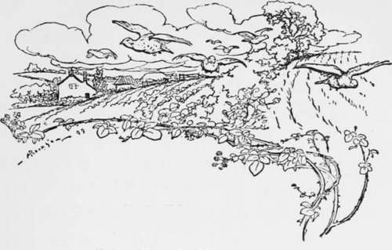

The Fox. Part 5
Description
This section is from the book "Hunting: A Manual of Fox, Hare, Stag & Otter Hunting", by J. Otho Paget. Also available from Amazon: Hunting: A Manual of Fox, Hare, Stag & Otter Hunting.
The Fox. Part 5
The fox has many enemies besides those that may be called legitimate, and the sheep-dog is the one that gives him most trouble. Fortunately the sheep-dog, in most instances, is too much of a cur to tackle a fox ; but occasionally they have a dash of some other blood that gives them spirit, and then, if they have a turn of speed, the foxes in the neighbourhood will suffer. Many tired foxes are killed in this way, but no one hears anything about them. I should like to see a breed of sheep-dogs limited to a height of fifteen inches, which would be quite big enough for work in an enclosed country, and they would not be a continual source of danger to foxes and hares. It would be very much to their interests if the hunt gave prizes for the best sheep-dog under fifteen or sixteen inches, and made each shepherd work his own dog in the competition. The sheep-dog nuisance1 is felt chiefly in grass countries and where the holdings are small. The fox has many other enemies : the hostile keeper, the aggrieved owner of poultry, the farmer who does not want the hounds, and the sporting navvy with a game terrier. All these men get opportunities of destroying at times, and it is to be feared they seldom miss a chance when it comes to them.
I am not sufficiently scientific to know the different varieties of mange that affect the fox, but I am quite sure they are more numerous than is generally allowed. The same disease may, I imagine, assume different forms. The variety that affects the blood must, I think, originate in the animal itself, and not be the result of contact with others. Does this disease arise from the want of some particular food, or is it inherent in the fox's constitution ? I remember my terrier running a fox down in the open, which had not lost a hair from either back or breast, but on examination I found the body was one mass of pustules. This disease was undoubtedly that of the blood. As I have already said, I am not properly qualified to discuss this question, and if it were otherwise, this would not be the place for such discussion. All we have to consider is how we can best avoid the disease, and how to stamp it out when it appears. The most important thing is not to have your foxes too thick on the ground, and never to turn any out if it can be avoided. Foul earths breed insects and parasites, which in their turn are causes of mange. Every animal has, I believe, its own particular flea, and whether they are there for the good of their host or not is a question I cannot decide to my own satisfaction. When, however, the insect becomes too numerous, then the animal suffers; but is the animal's weakness the cause or the result of the insect's increase ? Where rabbits are very heavily stocked, it will be found that their coats are swarming with insects, and this state of things is the general prelude to a very heavy death-rate. In moderation the flea and others of that tribe may do good, but I advise you when turning foxes down to see that their coats are free from every sort of vermin. It never occurred to me before that perhaps civilisation is suffering now in gout, eczema, and other things, for having exterminated that homely flea which must have been the constant companion of our ancestors. If you feed foxes—I have already said it is a bad practice —always vary the entertainment as much as possible, and never give meat. What you give should be merely a little help and not a regular meal. I have never yet seen a fox in confinement with the gloss of health on his coat, which proves they want certain foods that we cannot provide. If you get mange in your coverts, the best plan is to take two or three couple of old hounds, net the rides and bag all the foxes, then you can examine each carefully, destroying the affected and turning out again all the clean ones. You want several assistants for this plan, and needless to say it is only possible in small coverts.
1 Quite true : this nuisance is increasing, and from a hunting and game-preserving point of view is to be deprecated.—Eds.
If foxes are not gifted with reason, they have a cunning instinct which answers the same purpose. They know at once the sounds which herald the approach of the hunt, and a veteran will often leave a covert when the cavalcade is two or three miles away; but he reasons that on previous occasions when he heard those same sounds before, he had a very narrow escape, and he therefore now accepts the warning to flee in good time.
I remember a certain day, one very dry cub-hunting season, when there was neither scent in covert or out, and it was quite hopeless expecting to hunt a cub to death. Hounds, however, marked a fox to ground in an artificial earth, and this seemed an excellent opportunity of getting blood, which it would be impossible to attain by other means. The whips were left in charge of the pack some distance away, whilst the huntsman and myself set about the task of eviction. I put the terrier in the earth, and a few seconds later a beautiful fox was noosed by the huntsman's whip, but as there was still another inside, we decided to catch both and sacrifice the worst. I therefore held the first fox whilst the second was being captured. Before the second had bolted into the deftly handled noose, the one I was holding had apparently died from strangulation by my whip. I was very much concerned at having, as I thought, killed a fox, and loosing the whip, held him up by the back of the neck. The eyes were closed, the jaws gaped, and the body hung limply down from my hand : every appearance of death was there. I laid him down on the ground, as I thought, a corpse, but the instant I let go of his neck, he jumped up and dashed off" into the covert. There was no doubt about it being a case of shamming death, and the only question is, had he reasoned with himself that this might prove a means of escaping ?1
1 The whole question of wild creatures ' shamming death' to protect themselves or young is a very interesting one, to which the close attention of naturalists may well be directed. Many instances of quadrupeds, birds, and even insects (such as the humming-bird, hawk-moth, and the magpie or currant moth), to all appearance ' shamming death1 or disablement, have been given of late by observers.—Eds.

Continue to: